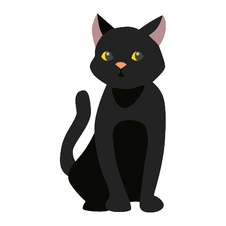

Co oznacza czarny kot- Koty od zawsze fascynowały ludzi, którzy dopatrywali się w nich zarówno boskości, jak i złych mocy. Najwięcej przesądów o kotach narosło wokół mruczków o czarnym kolorze sierści. W średniowieczu zwierzęta te budziły strach, bo uważano je za wysłanników diabła albo pomocników czarownic. Wierzono w ich ścisłe związki z magią i na tle tego przekonania wykształciło się wiele przesądów o czarnych kotach. Skąd wzięło się takie skojarzenie? Najprawdopodobniej z dawnej nordyckiej mitologii. Zaprzęg bogini Frei, uważanej za pierwowzór czarownicy, ciągnęły dwa czarne koty. To właśnie od niej zaczęły się średniowieczne prześladowania czarownic i… czarnych kotów.
Nie zawsze pech a czasem szczęście-Na szczęście nie we wszystkich kulturach panuje przekonanie o tym, że czarne koty mogą przynieść nieszczęście. W wielu jest wręcz odwrotnie. Jeden z angielskich przesądów mówi o tym, że wręczenie pannie młodej czarnego kota w dniu jej ślubu zagwarantuje jej powodzenie w małżeństwie. Uważa się też, że obecność mruczka w domu nowożeńców ochroni ich przed złymi mocami, zapewniając dobre życie. Czarne koty są także lubiane przez singielki – w Japonii wierzy się, że kot o takim umaszczeniu ułatwia samotnym kobietom znalezienie miłości.
